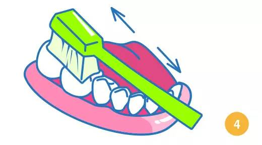

巴斯刷牙法(The Bass Method)，又称贝式法或水平颤动法，是一种有效去除龈缘附近及龈沟内菌斑的方法。是由美国牙科协会推荐的一种有效去除龈缘附近及龈沟内菌斑的方法。
1.将牙刷对准牙齿与牙龈交接的地方。刷毛与牙齿大致呈45°角，同时将刷毛向牙齿轻压，使刷毛略呈圆弧，牙刷侧边与牙齿有相当大的接触。
2.牙刷定位后，开始作短距离的水平运动，两颗到三颗牙前后来回约刷10次。
3.上颚后牙的舌侧部分是较不易刷的地方，刷毛仍对准牙齿与牙龈的交接处，刷柄要贴近大门牙。

4.刷咬合面时，也是两颗两颗牙，来回的刷。咬合面上的天然窝沟不容易刷干净，要用力些刷哦。
5.刷门牙的时候有点特殊，要把牙刷竖起来，一颗一颗的上下来回刷，内外都要刷到。
6.只要循序的刷便不会有遗漏。每个区域刷30秒左右。
一区：先刷左边上面
二区：再刷左边下面
三区 : 刷刷右边上面
四区 : 再刷右边下面
五区 : 单独刷上下门牙
7.刷完所有牙齿后，轻轻的刷舌头表面，清水漱口就大功告成啦。